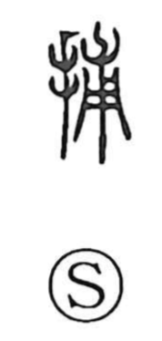

捕

Uncategorized
Kun: toraeru, torawareru, toru, tsukamaeru, tsukamaru | On: ho
to catch ・ to seize ・ to arrest ・ to apprehend
Explanation
A phono-semantic character, 捕 takes 甫 as its phonetic. 甫 (ho) originally depicted a young plant with its roots and came to suggest enclosing or wrapping something within. On that image, 捕 expresses the act of catching and binding—arrest and apprehension. The related graph 逋 (ho, “to flee”) shows escape from such capture, underscoring the same semantic field. Hence 捕 is used for catching and arresting.